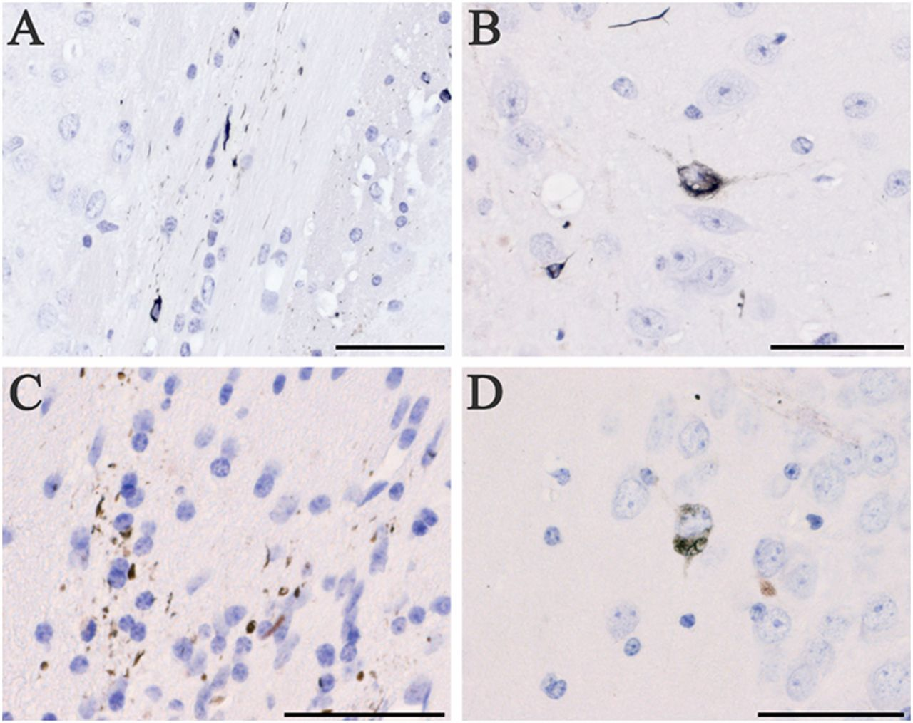
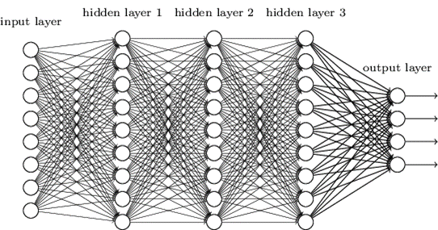
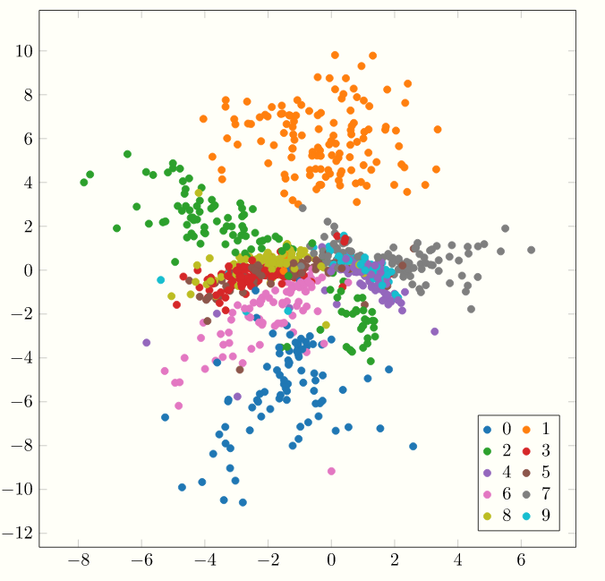
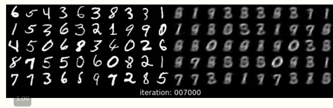
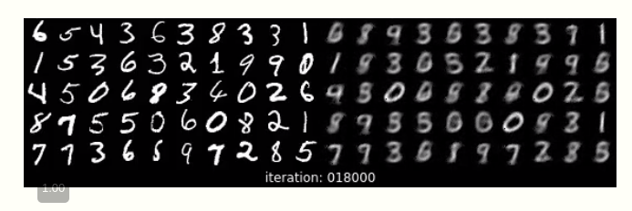
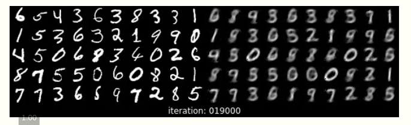
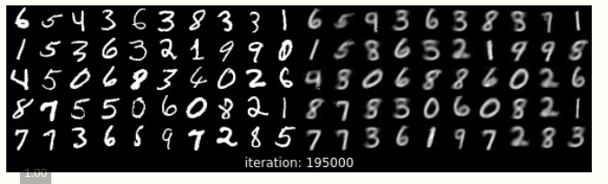
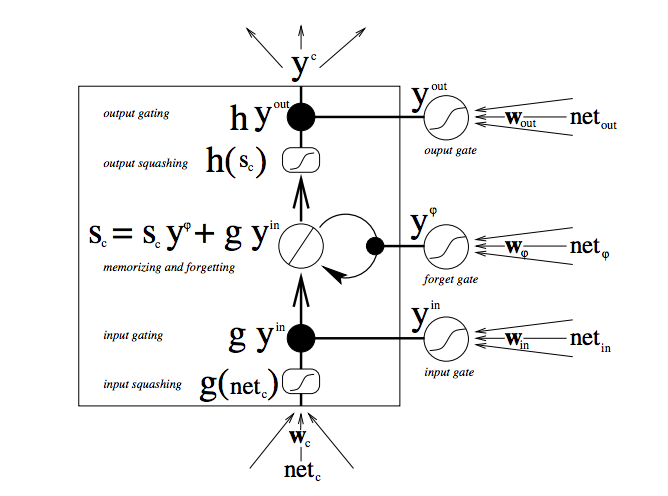
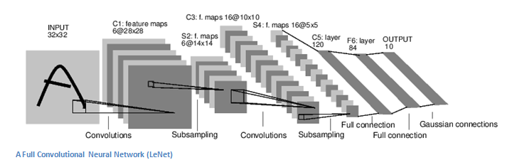
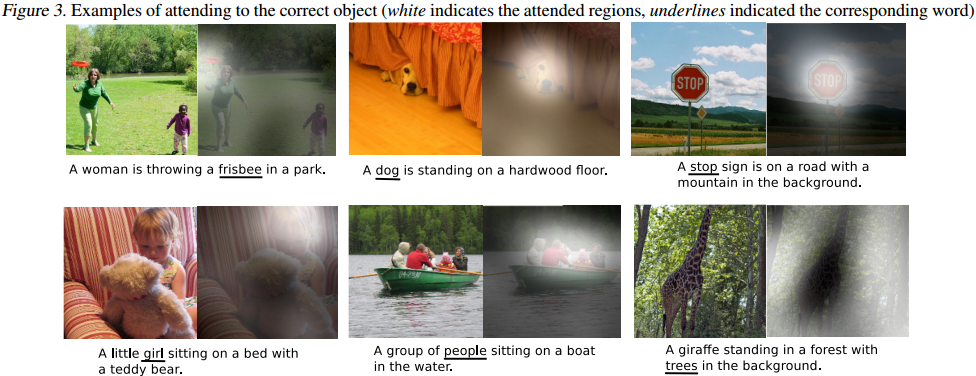

From Alzheimers to AI
Manni Vattapally
- Bachelors- FTDP
- Masters- Neuronal Simulation
- Current- From Autoencoders to RNNs
- Future- AI directed Learning
Outline
Bachelors
- Studied FTDP-17
- Genetic cause, mutations in MAPT
- Key characteristic- Tau protein inclusions
- Tau acted as prion, but inclusions were benign
- Cellular defence mechanism of mutated MAPT protein aggregate
- Inclusions didn't directly impede function
- (A and B) Neuropil threads and coiled bodies in ALZ17 mouse
- (C and D) ALZ17 mouse 12 mo with homogenate
- Bachelors- FTDP
- Masters- Neuronal Simulation with NEURON Python
- Neurons defined within NEURON Python framework
- MOD files for single ion channels from supervisor
- Defined dimensions per neuron- Dendrites, axonal length
- selected one 'correct' motor neuron from simulated patch (5-16 neurons)
- excitatory signals fed back to neurons firing in tandem
- maintained through 'leaky' ion channels
- signal convergence of nearby neurons observed
- Simplified model: Ball and stick
- many more neurons simulated from retinal ganglion onwards
- identified signals of edges and possibly color/texture
- LGN -> V1 -> V2 -> V4
- identified possibility of 'multiple' interpretations of signal
- summation observed
- Very similar to CNN function
- Bachelors- FTDP
- Masters- Neuronal Simulation
- Current- From Autoencoders to RNNs
- Multi-layer perceptrons -> Autoencoders
- Recursive Neural Networks for translation
- Convoluted Neural Networks for the MNIST dataset
- Can approximate any function with non-linear hidden units
- very slow to train (no. of hyperparameters related to an exponential function of node number)
- Backbone behind most forms of unsupervised learning
- Compresses feature space, then decodes compressed vector
- Encoding MNIST dataset is straightforward
- The staple architecture for time series data
- My project with RNN involved translation
- positional encoding key when translating between different sentence structure
- Text used was between French and English
- Studied this in the context of image recognition
- Identified MNIST characters with an accuracy of 72% with LeNET architecture
- Bachelors- FTDP
- Masters- Neuronal Simulation
- Current- From Autoencoders to RNNs
- Future- AI directed Learning
- Best visualized through image based problems
- Examples: attention towards past errors, high volatility, etc
- DL4J- https://deeplearning4j.org/lstm.html
- Olah & Carter, "Attention and Augmented Recurrent Neural Networks", Distill, 2016. http://doi.org/10.23915/distill.00001
- User BigBaloon, https://github.com/BIGBALLON/cifar-10-cnn
First brush with Cognition
Key discoveries from Literature review
Tau Protein Inclusions- Mouse studies
-

Masters
Motor Cortex Simulation
Causing signal oscillation
Visual Cortex Simulation
Current
Machine Learning
Diverse projects across the field of ML
The Universal Function Approximator
-

Autoencoder

Latent Space Map
Decoded Digits
   Recurrent Neural Networks and LSTMs
-

Recurrent Neural Networks and LSTMs
Convolutional Neural Networks
-

Future
Directed Learning/Attention Augmentation
-
